library(tidyverse)
library(readxl)
library(ggformula)
library(modelbased)
library(marginaleffects)
library(emmeans)
theme_set(theme_bw() + theme(legend.position = "top"))
set.seed(666)From model to meaning using R
Introduction
This notebook shows how to use various packages to 1) import data from an Excel spreadsheet (readxl), 2) evaluate and compare models (performance and modelsummary), and 3) estimate quantities of interest/estimands (modelbased) using a causal model and a statistical model with interaction (m5) of the mouse stress/sociability/neuronal activation experiment illustrated during the lecture of week 11 (2025-03-24, Chapter 9: Models with interactions) by Evan Schaffer.
The aim of the original study was to explore the effect of stress on the sociability of male and female mice in a standard social approach test. Neuronal activation during social approach was assessed using immunohistochemistry against the immediate early gene product cFos.
Study available at https://doi.org/10.1371/journal.pone.0281388
Data available at https://doi.org/10.7910/DVN/1RAQON
Setup environment
Science before statistics: causal model and estimand
In our analysis, the quantity of interest/estimand is the direct causal effect of stress (StressCondition, treatment variable) on neuronal activation (CeLcfos, outcome variable). I am going to ignore the Treatment and Sex variables in this example. However, in real-life, one should think about them (and other variables relevant to DGP, even if unobserved) and include them in the causal model, unless of course the assumption is that they are in no way causally related to the exposure and/or the outcome variable (which is clearly NOT the case here).
Based on my general neuroscience domain knowledge and cursory examination of the experimental design, the DAG I propose (for didactic purpose) is the following:
library(dagitty)
dag <- dagitty("dag {
CeLcfos [outcome]
StressCondition [exposure]
Sociability -> CeLcfos
StressCondition -> CeLcfos
StressCondition -> Sociability
}")
coordinates(dag) <- list(
x = c(StressCondition = 0, Sociability = 0.5, CeLcfos = 1),
y = c(StressCondition = 0, Sociability = 1, CeLcfos = 0))
plot(dag)Please note that a DAG implies conditional independencies in the data that should be tested if this analysis was for real.
According to this causal graph, in order to estimate the direct causal effect of StressCondition on CeLcfos, I must include Sociability as a control variable/covariate in the regression model. Doing this blocks the indirect causal effect of StressCondition on CeLcfos mediated by Sociability.
# find the set of adjustment variables for the direct effect
adjustmentSets(dag, exposure = "StressCondition", outcome = "CeLcfos", effect = "direct"){ Sociability }If I proposed a different DAG (see below) where StressCondition alters Sociability not only directly but also indirectly by altering neuronal activity (measured by the CeLcfos variable) in the amygdala–not an unlikely scenario–then including Sociability as a control variable/covariate in the regression model would be wrong. This is because (Sociability being a collider rather than a mediator in this alternative DAG) including Sociability as a control variable/covariate in the regression model would introduce a spurious correlation that confounds the estimate of the direct causal effect of StressCondition on CeLcfos.
dag <- dagitty("dag {
CeLcfos [outcome]
StressCondition [exposure]
CeLcfos -> Sociability
StressCondition -> CeLcfos
StressCondition -> Sociability
}")
coordinates(dag) <- list(
x = c(StressCondition = 0, Sociability = 0.5, CeLcfos = 1),
y = c(StressCondition = 0, Sociability = 1, CeLcfos = 0))
plot(dag)# find the set of adjustment variables for the direct effect
adjustmentSets(dag, exposure = "StressCondition", outcome = "CeLcfos", effect = "direct"){}It should be clear by now that we need to specify the DAG/lay bare our causal assumptions in order to appropriately specify the statistical model we use to estimate the causal estimand!
Read and prep data
This study is a good example of how NOT to format supplementary data in an Excel spreadsheet! It shouldn”t take more than one call to the read_xlsx() function to import data from a properly formatted Excel spreadsheet.
id1 <- read_xlsx("Figure 3.xlsx", range = "New_Beh+cfos!C4:D11", col_names = c("ID", "Treatment"))
id2 <- read_xlsx("Figure 3.xlsx", range = "New_Beh+cfos!C16:D23", col_names = c("ID", "Treatment"))
id3 <- read_xlsx("Figure 3.xlsx", range = "New_Beh+cfos!C26:D33", col_names = c("ID", "Treatment"))
id4 <- read_xlsx("Figure 3.xlsx", range = "New_Beh+cfos!C37:D44", col_names = c("ID", "Treatment"))
id <- rbind(id1, id2, id3, id4)cel1 <- read_xlsx("Figure 3.xlsx", range = "New_Beh+cfos!H4:H11", col_names = "CeLcfos")
cel2 <- read_xlsx("Figure 3.xlsx", range = "New_Beh+cfos!H16:H23", col_names = "CeLcfos")
cel3 <- read_xlsx("Figure 3.xlsx", range = "New_Beh+cfos!H26:H33", col_names = "CeLcfos")
cel4 <- read_xlsx("Figure 3.xlsx", range = "New_Beh+cfos!H37:H44", col_names = "CeLcfos")
cel <- rbind(cel1, cel2, cel3, cel4)soc1 <- read_xlsx("Figure 3.xlsx", range = "New_Beh+cfos!N4:N11", col_names = "Sociability")
soc2 <- read_xlsx("Figure 3.xlsx", range = "New_Beh+cfos!N16:N23", col_names = "Sociability")
soc3 <- read_xlsx("Figure 3.xlsx", range = "New_Beh+cfos!N26:N33", col_names = "Sociability")
soc4 <- read_xlsx("Figure 3.xlsx", range = "New_Beh+cfos!N37:N44", col_names = "Sociability")
soc <- rbind(soc1, soc2, soc3, soc4)d <- cbind(id,soc,cel) %>%
mutate(Sex = factor(substr(ID, 1, 1))) %>%
rowwise() %>%
mutate(
StressCondition = case_when(
grepl("FC-", Treatment) ~ "Control",
grepl("FC+", Treatment) ~ "Shock",
grepl("Control", Treatment) ~ "Control",
grepl("Stress", Treatment) ~ "Shock"),
Treatment = case_when(
grepl("Veh", Treatment) ~ "Vehicle",
grepl("Alp", Treatment) ~ "Alprazolam")) %>%
ungroup() %>%
mutate(logCeLcfos = log(CeLcfos),
Sex = factor(Sex),
Treatment = factor(Treatment),
StressCondition = factor(StressCondition)) %>%
select(ID, CeLcfos, logCeLcfos, StressCondition, Sociability, everything())
head(d)| ID | CeLcfos | logCeLcfos | StressCondition | Sociability | Treatment | Sex |
|---|---|---|---|---|---|---|
| M14 | 87.50 | 4.472 | Shock | 71.55 | Alprazolam | M |
| M15 | 675.00 | 6.515 | Shock | 0.00 | Alprazolam | M |
| M1 | 50.00 | 3.912 | Shock | 86.90 | Alprazolam | M |
| M2 | 22.22 | 3.101 | Shock | 93.43 | Alprazolam | M |
| F9 | 316.67 | 5.758 | Shock | 82.24 | Alprazolam | F |
| F13 | 79.17 | 4.372 | Shock | 65.52 | Alprazolam | F |
Exploratory data analysis
gf_point(CeLcfos ~ Sociability, color = ~ StressCondition, data = d) %>% gf_smooth(method = "gam", formula = y ~ s(x, bs = "cs"), se = TRUE)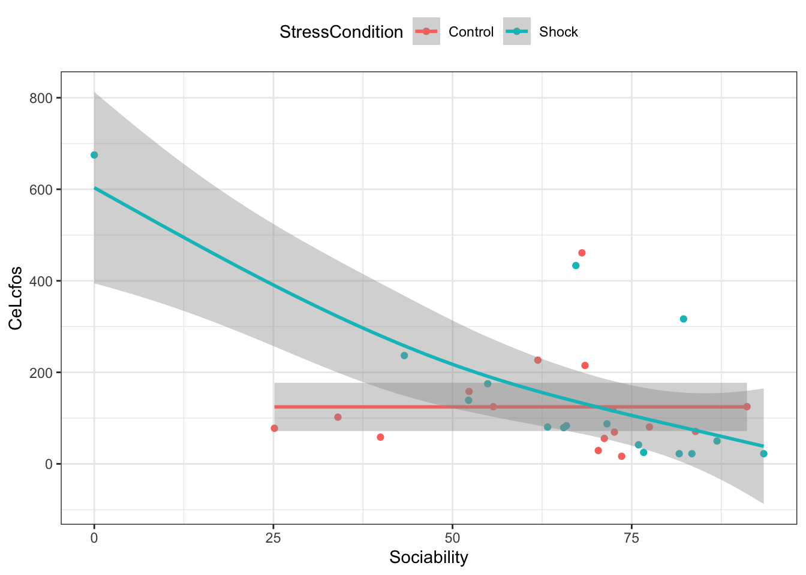
The data point with zero sociability and high cfos+ cell count is suspicious but for the sake of this example I will keep it in the dataset. However, in real life, it would require more careful consideration.
CeLcfos ~ NULL
gf_point(CeLcfos ~ 1, data = d) %>% coursekata::gf_model(CeLcfos ~ 1, data = d)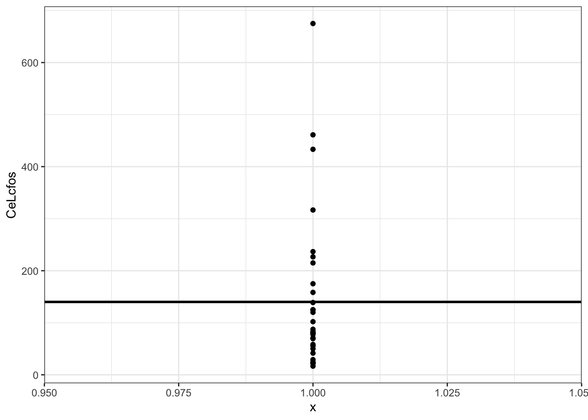
gf_density(CeLcfos ~ 1, data = d)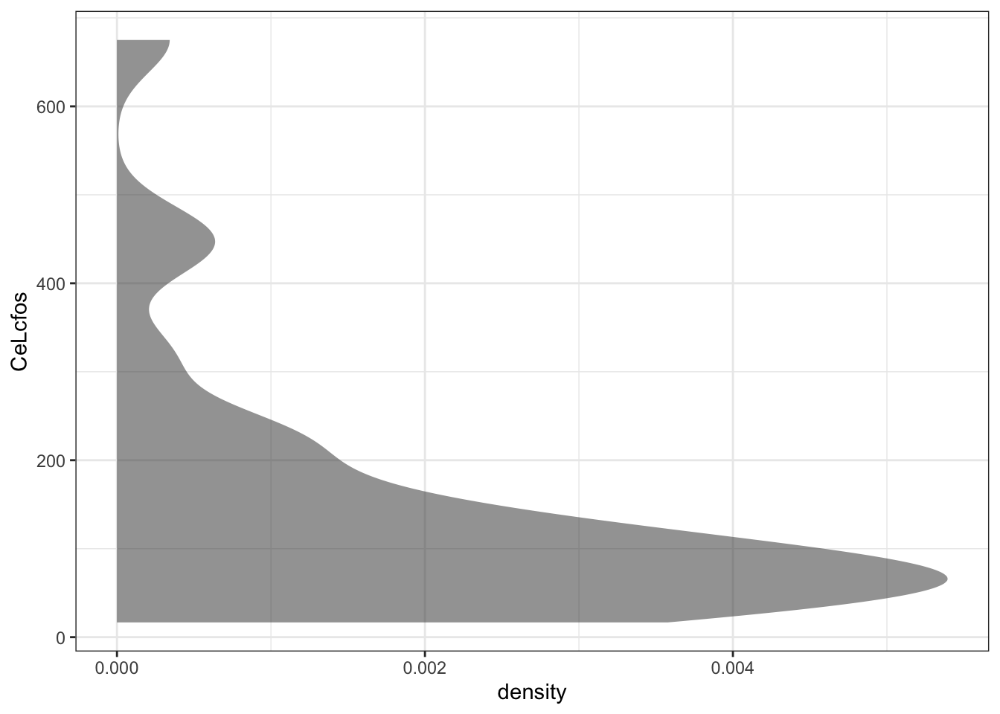
It is often but erroneously believed that linear regression assumes that the outcome variable is normally distributed. This misconception arises from not knowing/remembering the regression likelihood equation(s) of the general linear model, e.g.:
\[ y_i \stackrel{\text{i.i.d.}} \sim \text{Normal}(\mu = \beta_0 + \beta_1 x_i, \sigma) \]
or (equivalently):
\[ y_i = \beta_0 + \beta_1 x_i + \epsilon_i \]
\[ \epsilon_i \stackrel{\text{i.i.d.}} \sim \text{Normal}(0, \sigma) \]
All the assumptions of the general linear model are unambiguously stated by these two equivalent notations!
Specifically, to return to the misconception mentioned above, the linear regression model assumes that the outcome variable \(y\) is normally distributed conditional on the covariates \(x\) or, equivalently, that the residuals are normally distributed.
For example, here I generated a dataset where the outcome variable \(y\) is clearly NOT normally distributed:
nsamples = 1000
y_xA = rnorm(nsamples, mean = 2, sd = 4)
y_xB = rnorm(nsamples, mean = 20, sd = 4)
y_x <- tibble(y = c(y_xA, y_xB), x = factor(c(rep("A", nsamples), rep("B", nsamples))))gf_dens(~ y, data = y_x)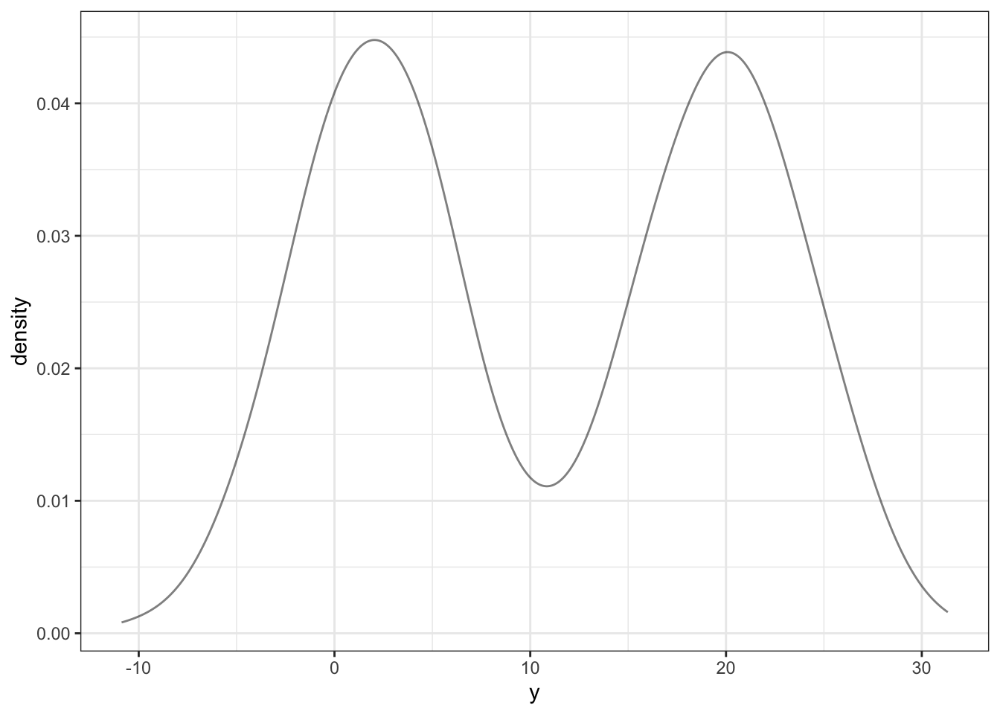
However, it is normally distributed conditional on the covariate \(x\), which is accordance with the assumption of the general linear mode:
gf_dens(~ y | x, data = y_x)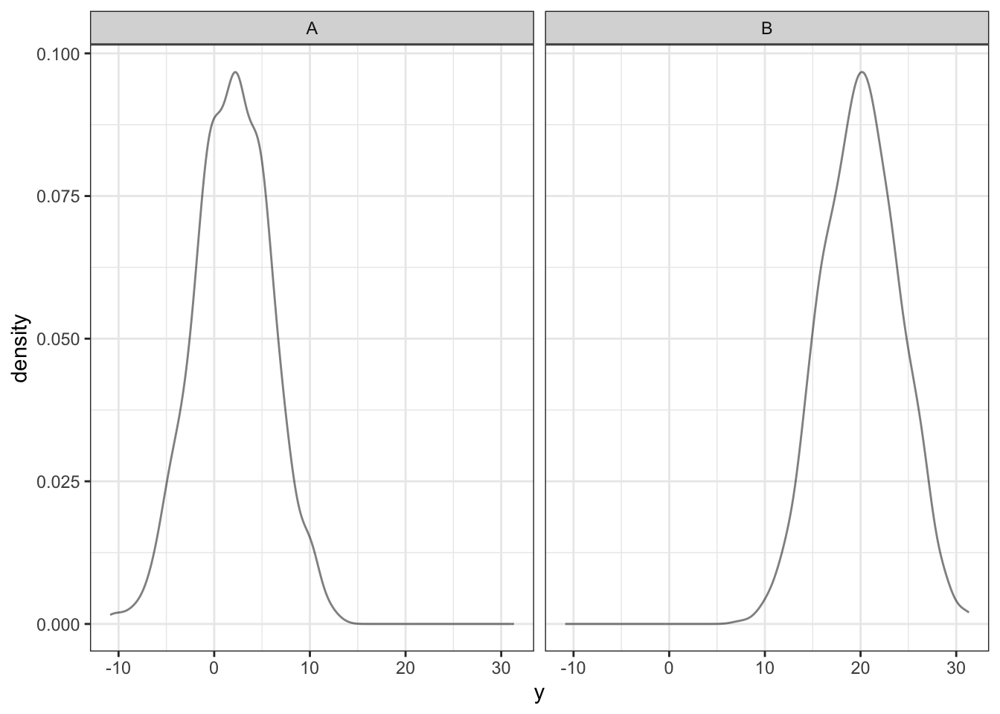
gf_dens(~ y, color = ~ x, data = y_x)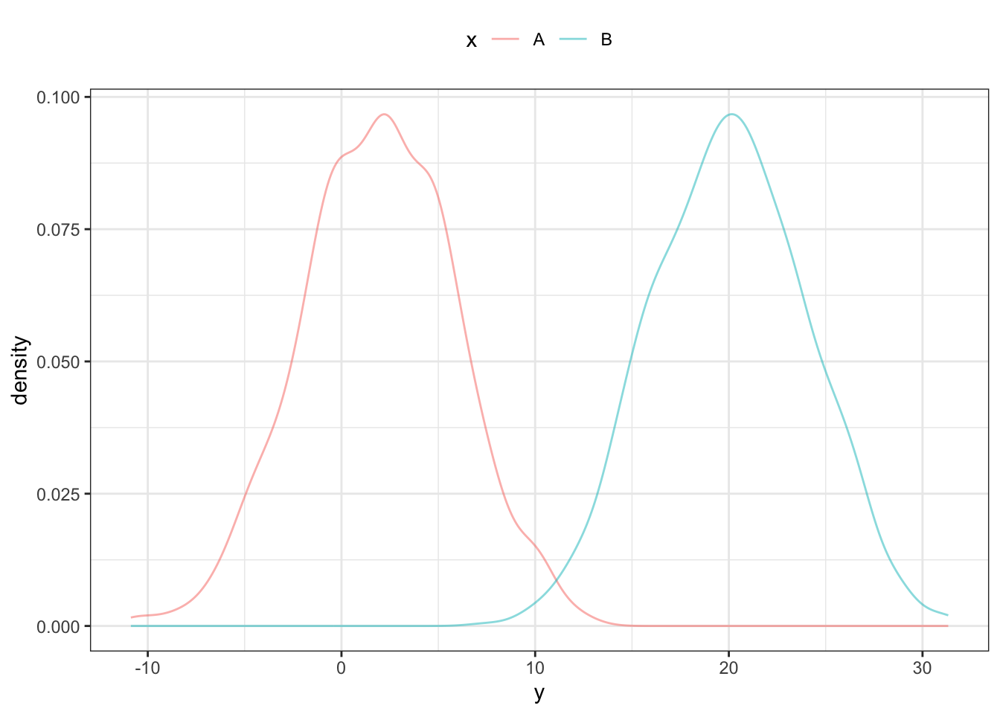
m <- lm(y ~ x, data = y_x)
summary(m)
Call:
lm(formula = y ~ x, data = y_x)
Residuals:
Min 1Q Median 3Q Max
-12.796 -2.733 0.042 2.773 11.295
Coefficients:
Estimate Std. Error t value Pr(>|t|)
(Intercept) 1.922 0.125 15.3 <0.0000000000000002 ***
xB 18.112 0.177 102.2 <0.0000000000000002 ***
---
Signif. codes: 0 '***' 0.001 '**' 0.01 '*' 0.05 '.' 0.1 ' ' 1
Residual standard error: 3.96 on 1998 degrees of freedom
Multiple R-squared: 0.839, Adjusted R-squared: 0.839
F-statistic: 1.04e+04 on 1 and 1998 DF, p-value: <0.0000000000000002performance::check_model(m)performance::check_normality(m)OK: residuals appear as normally distributed (p = 0.318).gf_jitter(y ~ x, color = ~ x, alpha = 0.1, data = y_x) %>%
coursekata::gf_model(m) %>%
ggExtra::ggMarginal(y, type="density")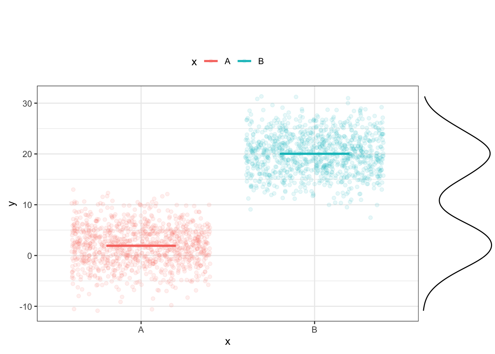
The “problem” with the CeLcfos outcome variable is not that it is not normally distributed, but that it is a count variable (or more precisely in this case a density, the number of “active neurons”/cfos+ cells per mm2 of the central lateral amygdala) and thus it cannot be negative.
A normally distributed variable is defined over the entire real line \((-\infty, \infty)\) and, therefore, it is not appropriate for count data, especially if they are concentrated close to the zero boundary.
mosaic::favstats(~ CeLcfos, data = d)| min | Q1 | median | Q3 | max | mean | sd | n | missing | |
|---|---|---|---|---|---|---|---|---|---|
| 16.67 | 54.17 | 81.94 | 162.5 | 675 | 140 | 147.8 | 32 | 0 |
gf_density(~ CeLcfos, data = d)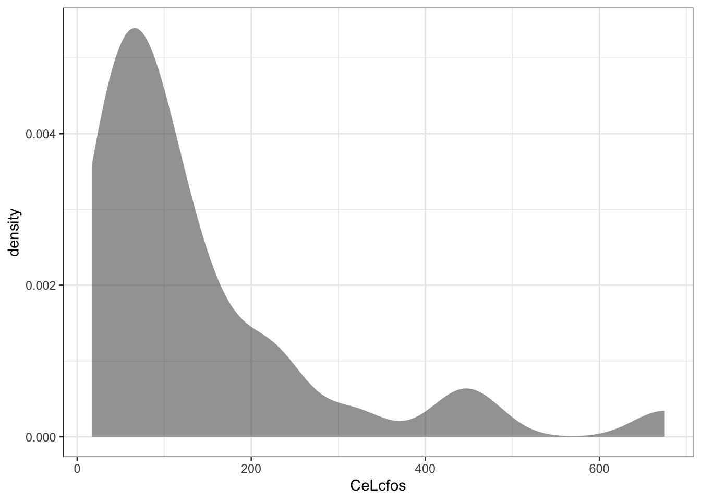
gf_qq(~ CeLcfos, data = d) %>% gf_qqline()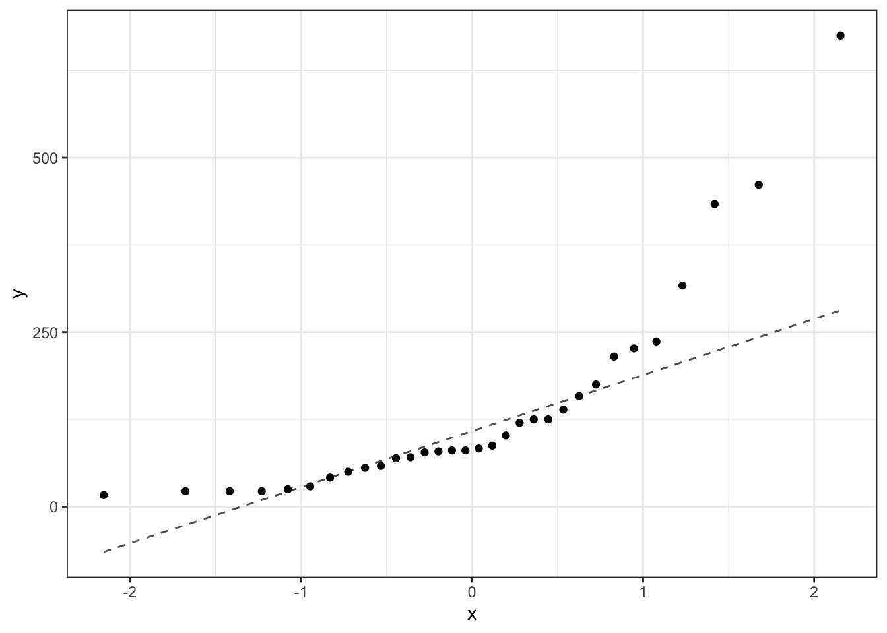
A log transformation is often applied to count data in order to make them more amenable to commonly used null-hypothesis significance tests and general linear regression modeling, all of which assume that the outcome variable is conditionally normally distributed.
mosaic::favstats(~ logCeLcfos, data = d)| min | Q1 | median | Q3 | max | mean | sd | n | missing | |
|---|---|---|---|---|---|---|---|---|---|
| 2.813 | 3.991 | 4.406 | 5.09 | 6.515 | 4.51 | 0.9464 | 32 | 0 |
gf_density(~ logCeLcfos, data = d)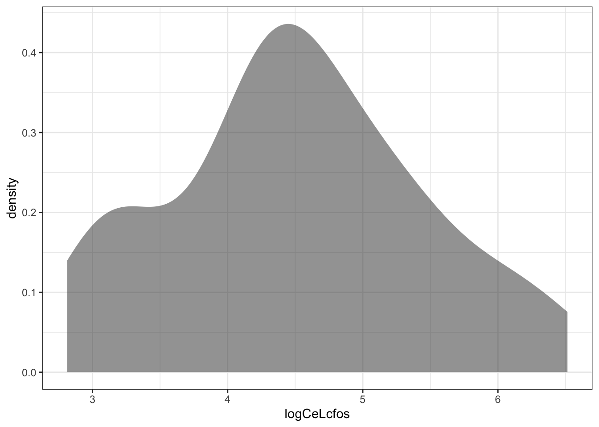
gf_qq(~ logCeLcfos, data = d) %>% gf_qqline()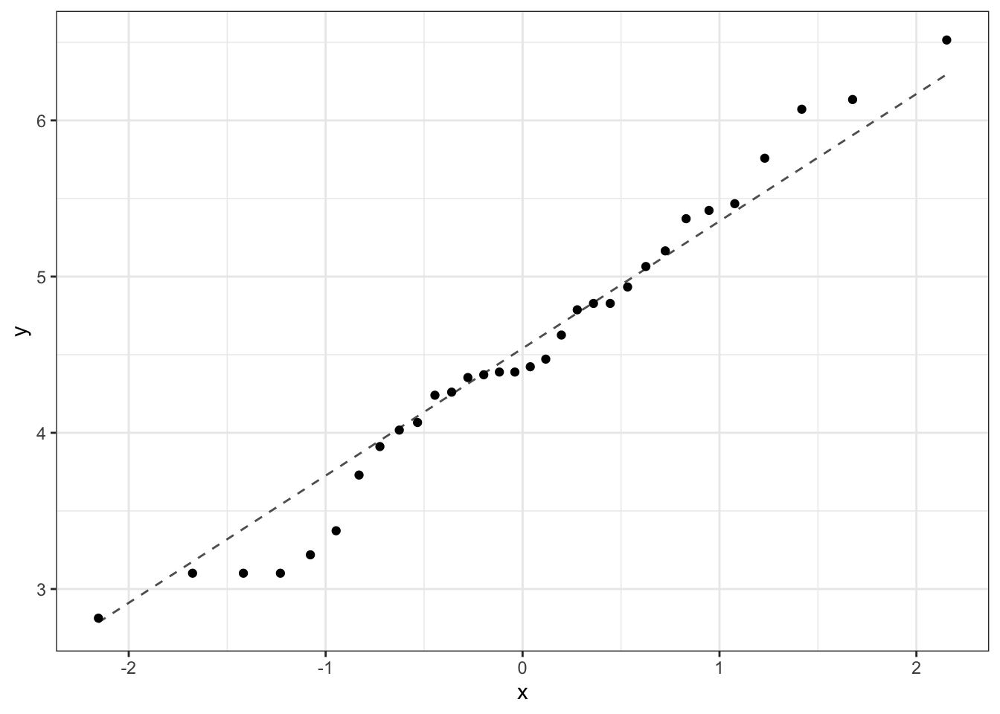
However, generalized linear models that, e.g., use the Poisson or negative binomial distribution are better suited for dealing with count data.
The log transformation of counts is also problematic when the data includes observations of zero counts and the whole dataset need to be fudged by adding a value, usually 1, before transformation.
log(CeLcfos) ~ NULL
gf_point(logCeLcfos ~ 1, data = d) %>% coursekata::gf_model(logCeLcfos ~ 1, data = d)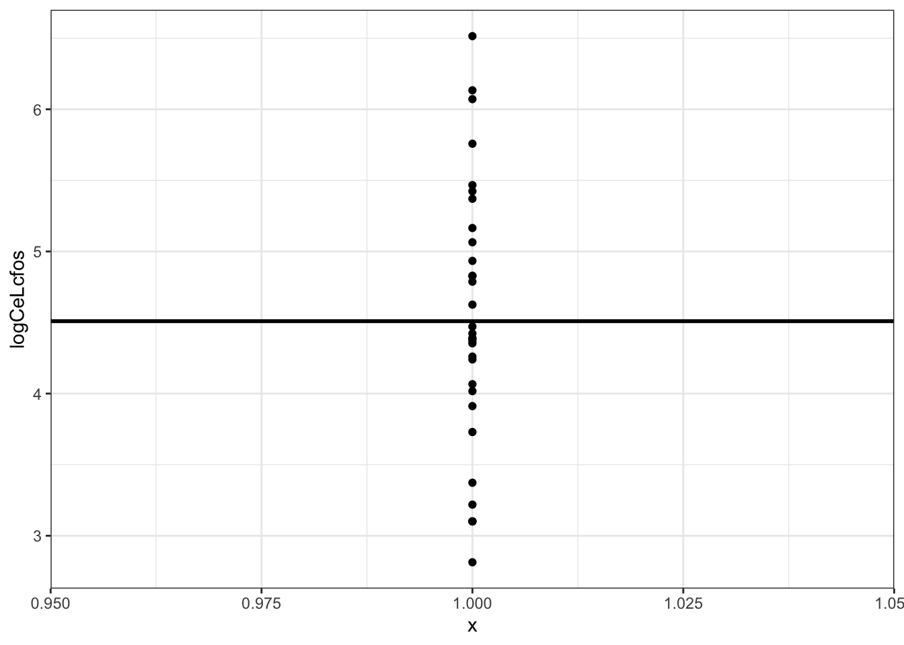
log(CeLcfos) ~ StressCondition
gf_point(logCeLcfos ~ StressCondition, color = ~ StressCondition, data = d) %>% coursekata::gf_model(logCeLcfos ~ StressCondition, data = d)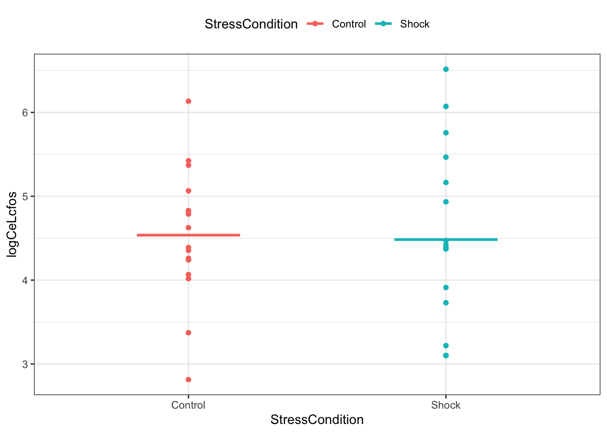
log(CeLcfos) ~ Sociability
gf_point(logCeLcfos ~ Sociability, data = d) %>% coursekata::gf_model(logCeLcfos ~ Sociability, data = d)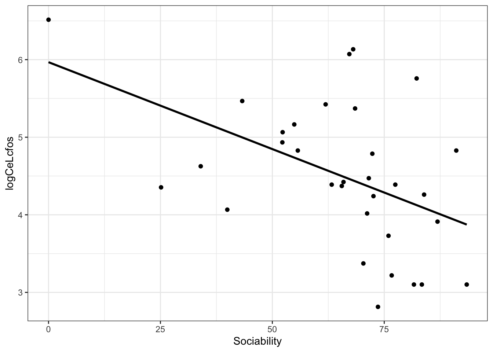
log(CeLcfos) ~ StressCondition + Sociability
gf_point(logCeLcfos ~ Sociability, color = ~ StressCondition, data = d) %>%
coursekata::gf_model(logCeLcfos ~ Sociability + StressCondition, data = d) %>% gf_refine(theme(legend.position = "none"))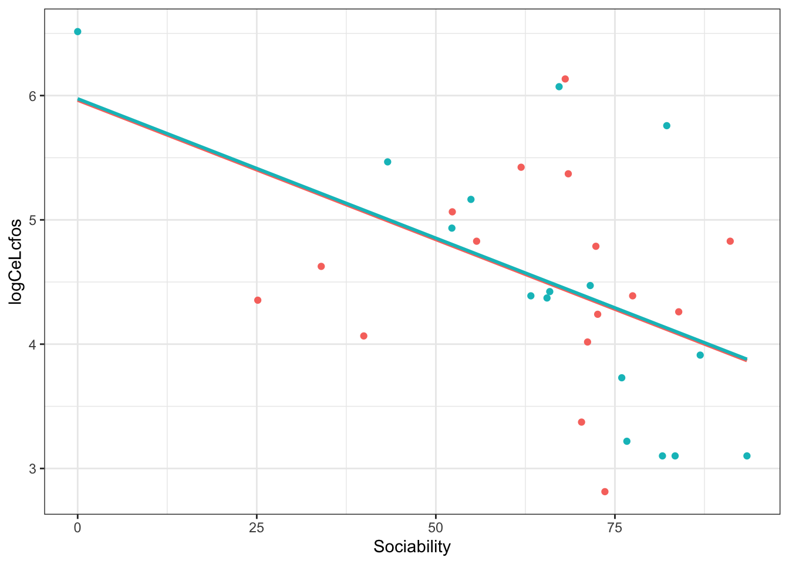
log(CeLcfos) ~ StressCondition * Sociability
gf_point(logCeLcfos ~ Sociability, color = ~ StressCondition, data = d) %>%
coursekata::gf_model(logCeLcfos ~ Sociability * StressCondition, data = d) %>% gf_refine(theme(legend.position = "none"))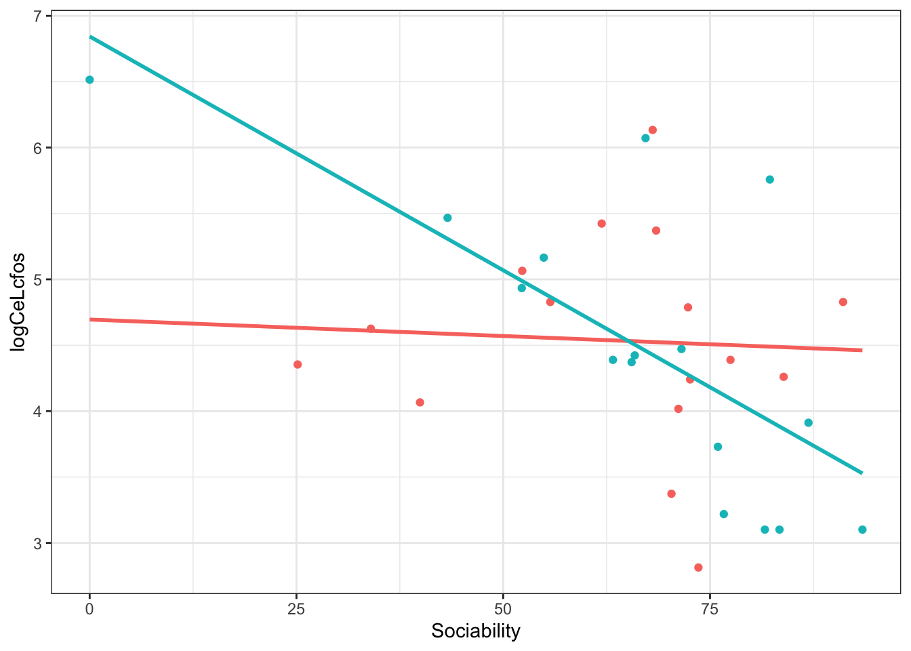
Specify, fit and evaluate statistical model based on causal model
Here I specify and fit different models mainly for didactic purpose, because the causal model already forces us to include the Sociability variable as a covariate/control variable in addition to the treatment variable StressCondition. This is because our causal assumption is that Sociability acts as a pipe (mediator) in the causal path between StressCondition and CeLcfos. The only specification choice left is to decide whether to model Sociability as a modifier (moderator) of the effect of StressCondition on CeLcfos or not (i.e., whether to use the additive or the interaction model).
Please note that moderation and mediation are two very different concepts that are often confused as one. Moderation occurs when the effect of the exposure on the outcome changes at different levels of a third variable (the moderator). Mediation occurs when the exposure influences the outcome through an intermediary variable (the mediator).
log(CeLcfos) ~ NULL
m1 <- lm(log(CeLcfos) ~ NULL, data = d)
summary(m1)
Call:
lm(formula = log(CeLcfos) ~ NULL, data = d)
Residuals:
Min 1Q Median 3Q Max
-1.696 -0.518 -0.104 0.580 2.005
Coefficients:
Estimate Std. Error t value Pr(>|t|)
(Intercept) 4.510 0.167 27 <0.0000000000000002 ***
---
Signif. codes: 0 '***' 0.001 '**' 0.01 '*' 0.05 '.' 0.1 ' ' 1
Residual standard error: 0.946 on 31 degrees of freedomsupernova::supernova(m1) Analysis of Variance Table (Type III SS)
Model: log(CeLcfos) ~ NULL
SS df MS F PRE p
----- --------------- | ------ --- ----- --- --- ---
Model (error reduced) | --- --- --- --- --- ---
Error (from model) | --- --- --- --- --- ---
----- --------------- | ------ --- ----- --- --- ---
Total (empty model) | 27.766 31 0.896 performance::check_model(m1)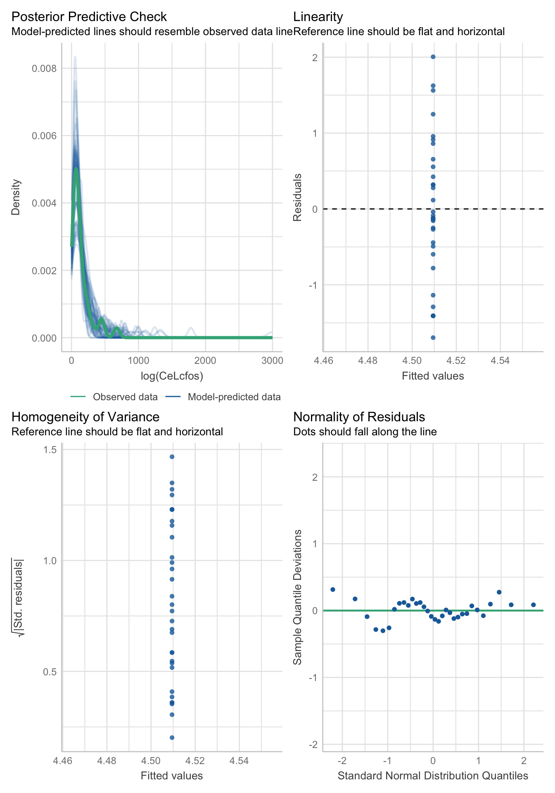
performance::check_autocorrelation(m1)OK: Residuals appear to be independent and not autocorrelated (p = 0.540).log(CeLcfos) ~ StressCondition
m2 <- lm(log(CeLcfos) ~ StressCondition, data = d)
summary(m2)
Call:
lm(formula = log(CeLcfos) ~ StressCondition, data = d)
Residuals:
Min 1Q Median 3Q Max
-1.7226 -0.5317 -0.0771 0.5670 2.0317
Coefficients:
Estimate Std. Error t value Pr(>|t|)
(Intercept) 4.536 0.240 18.87 <0.0000000000000002 ***
StressConditionShock -0.053 0.340 -0.16 0.88
---
Signif. codes: 0 '***' 0.001 '**' 0.01 '*' 0.05 '.' 0.1 ' ' 1
Residual standard error: 0.962 on 30 degrees of freedom
Multiple R-squared: 0.000809, Adjusted R-squared: -0.0325
F-statistic: 0.0243 on 1 and 30 DF, p-value: 0.877supernova::supernova(m2) Analysis of Variance Table (Type III SS)
Model: log(CeLcfos) ~ StressCondition
SS df MS F PRE p
----- --------------- | ------ -- ----- ----- ----- -----
Model (error reduced) | 0.022 1 0.022 0.024 .0008 .8772
Error (from model) | 27.744 30 0.925
----- --------------- | ------ -- ----- ----- ----- -----
Total (empty model) | 27.766 31 0.896 performance::check_model(m2)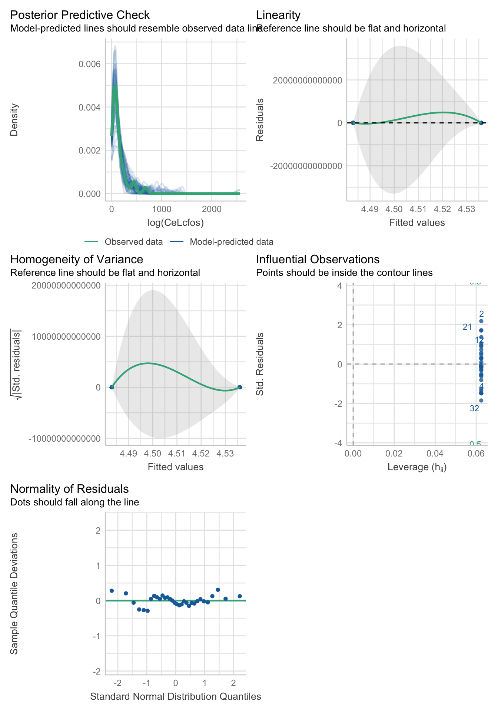
performance::check_autocorrelation(m2)OK: Residuals appear to be independent and not autocorrelated (p = 0.420).log(CeLcfos) ~ Sociability
m3 <- lm(log(CeLcfos) ~ Sociability, data = d)
summary(m3)
Call:
lm(formula = log(CeLcfos) ~ Sociability, data = d)
Residuals:
Min 1Q Median 3Q Max
-1.5049 -0.6280 0.0197 0.4479 1.6913
Coefficients:
Estimate Std. Error t value Pr(>|t|)
(Intercept) 5.96731 0.51798 11.52 0.0000000000015 ***
Sociability -0.02240 0.00762 -2.94 0.0063 **
---
Signif. codes: 0 '***' 0.001 '**' 0.01 '*' 0.05 '.' 0.1 ' ' 1
Residual standard error: 0.848 on 30 degrees of freedom
Multiple R-squared: 0.224, Adjusted R-squared: 0.198
F-statistic: 8.64 on 1 and 30 DF, p-value: 0.00626supernova::supernova(m3) Analysis of Variance Table (Type III SS)
Model: log(CeLcfos) ~ Sociability
SS df MS F PRE p
----- --------------- | ------ -- ----- ----- ----- -----
Model (error reduced) | 6.211 1 6.211 8.644 .2237 .0063
Error (from model) | 21.555 30 0.718
----- --------------- | ------ -- ----- ----- ----- -----
Total (empty model) | 27.766 31 0.896 performance::check_model(m3)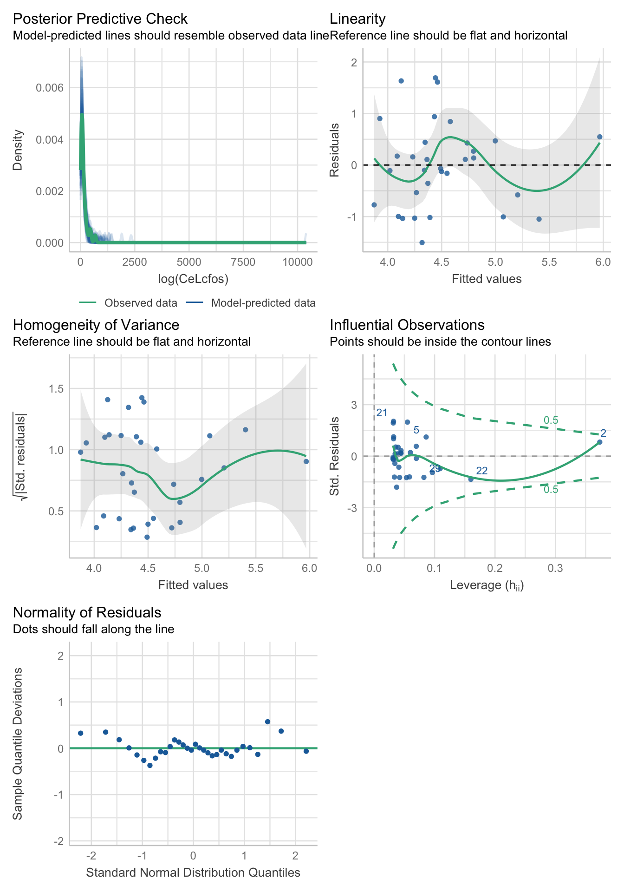
performance::check_autocorrelation(m3)OK: Residuals appear to be independent and not autocorrelated (p = 0.646).log(CeLcfos) ~ StressCondition + Sociability
m4 <- lm(log(CeLcfos) ~ StressCondition + Sociability, data = d)
summary(m4)
Call:
lm(formula = log(CeLcfos) ~ StressCondition + Sociability, data = d)
Residuals:
Min 1Q Median 3Q Max
-1.4990 -0.6255 0.0141 0.4508 1.6971
Coefficients:
Estimate Std. Error t value Pr(>|t|)
(Intercept) 5.96295 0.53940 11.05 0.0000000000065 ***
StressConditionShock 0.01152 0.30562 0.04 0.9702
Sociability -0.02243 0.00777 -2.89 0.0073 **
---
Signif. codes: 0 '***' 0.001 '**' 0.01 '*' 0.05 '.' 0.1 ' ' 1
Residual standard error: 0.862 on 29 degrees of freedom
Multiple R-squared: 0.224, Adjusted R-squared: 0.17
F-statistic: 4.18 on 2 and 29 DF, p-value: 0.0254supernova::supernova(m4) Analysis of Variance Table (Type III SS)
Model: log(CeLcfos) ~ StressCondition + Sociability
SS df MS F PRE p
--------------- --------------- | ------ -- ----- ----- ----- -----
Model (error reduced) | 6.212 2 3.106 4.179 .2237 .0254
StressCondition | 0.001 1 0.001 0.001 .0000 .9702
Sociability | 6.190 1 6.190 8.328 .2231 .0073
Error (from model) | 21.554 29 0.743
--------------- --------------- | ------ -- ----- ----- ----- -----
Total (empty model) | 27.766 31 0.896 performance::check_model(m4)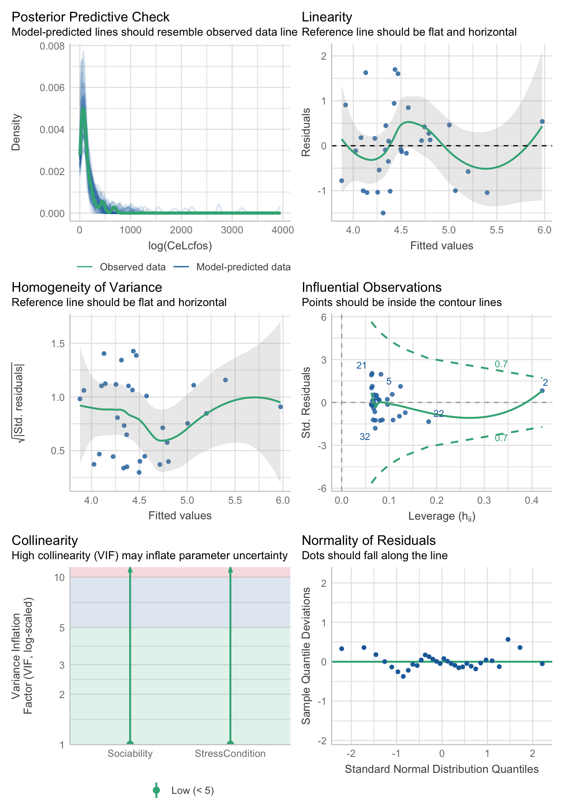
performance::check_autocorrelation(m4)OK: Residuals appear to be independent and not autocorrelated (p = 0.464).log(CeLcfos) ~ StressCondition * Sociability
m5 <- lm(log(CeLcfos) ~ StressCondition * Sociability, data = d)
summary(m5)
Call:
lm(formula = log(CeLcfos) ~ StressCondition * Sociability, data = d)
Residuals:
Min 1Q Median 3Q Max
-1.698 -0.420 -0.097 0.273 1.833
Coefficients:
Estimate Std. Error t value Pr(>|t|)
(Intercept) 4.6950 0.7652 6.14 0.0000013 ***
StressConditionShock 2.1482 1.0082 2.13 0.042 *
Sociability -0.0025 0.0116 -0.22 0.831
StressConditionShock:Sociability -0.0330 0.0149 -2.21 0.035 *
---
Signif. codes: 0 '***' 0.001 '**' 0.01 '*' 0.05 '.' 0.1 ' ' 1
Residual standard error: 0.81 on 28 degrees of freedom
Multiple R-squared: 0.339, Adjusted R-squared: 0.268
F-statistic: 4.79 on 3 and 28 DF, p-value: 0.00813supernova::supernova(m5) Analysis of Variance Table (Type III SS)
Model: log(CeLcfos) ~ StressCondition * Sociability
SS df MS F PRE
--------------------------- --------------- | ------ -- ----- ----- -----
Model (error reduced) | 9.415 3 3.138 4.789 .3391
StressCondition | 2.976 1 2.976 4.540 .1395
Sociability | 0.030 1 0.030 0.046 .0017
StressCondition:Sociability | 3.203 1 3.203 4.888 .1486
Error (from model) | 18.351 28 0.655
--------------------------- --------------- | ------ -- ----- ----- -----
Total (empty model) | 27.766 31 0.896
p
-----
.0081
.0420
.8310
.0354
-----
performance::check_model(m5)performance::check_autocorrelation(m5)OK: Residuals appear to be independent and not autocorrelated (p = 0.318).Model evaluation and comparison
Here I use modelsummary() and compare_performance() functions from the modelsummary and performance packages to evaluate and compare the models fitted above.
modelsummary::modelsummary(list(m1, m2, m3, m4, m5), stars = TRUE, statistic = "conf.int")| (1) | (2) | (3) | (4) | (5) | |
|---|---|---|---|---|---|
| + p < 0.1, * p < 0.05, ** p < 0.01, *** p < 0.001 | |||||
| (Intercept) | 4.510*** | 4.536*** | 5.967*** | 5.963*** | 4.695*** |
| [4.168, 4.851] | [4.045, 5.027] | [4.909, 7.025] | [4.860, 7.066] | [3.128, 6.262] | |
| StressConditionShock | -0.053 | 0.012 | 2.148* | ||
| [-0.747, 0.641] | [-0.614, 0.637] | [0.083, 4.213] | |||
| Sociability | -0.022** | -0.022** | -0.002 | ||
| [-0.038, -0.007] | [-0.038, -0.007] | [-0.026, 0.021] | |||
| StressConditionShock × Sociability | -0.033* | ||||
| [-0.064, -0.002] | |||||
| Num.Obs. | 32 | 32 | 32 | 32 | 32 |
| R2 | 0.000 | 0.001 | 0.224 | 0.224 | 0.339 |
| R2 Adj. | 0.000 | -0.032 | 0.198 | 0.170 | 0.268 |
| AIC | 378.9 | 380.9 | 372.8 | 374.8 | 371.6 |
| BIC | 381.8 | 385.2 | 377.2 | 380.6 | 379.0 |
| Log.Lik. | -43.135 | -43.122 | -39.084 | -39.083 | -36.509 |
| F | 0.024 | 8.644 | 4.179 | 4.789 | |
| RMSE | 0.93 | 0.93 | 0.82 | 0.82 | 0.76 |
plot(performance::compare_performance(m1, m2, m3, m4, m5, rank = TRUE, verbose = FALSE))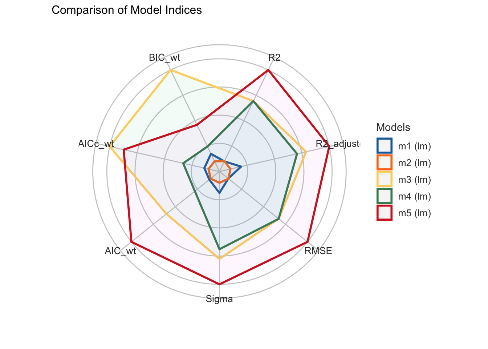
Model predictions
Statistical models provide a lot more insights than what you can get by simply looking at the estimates of the parameters (regression coefficients in the case of general linear models). In many cases, like models with interactions, non-linear effects, non-standard families, random effects, the parameters can be hard if not impossible to interpret as a quantity of interest/estimand.
Here I use the estimate_means() and estimate_contrasts() functions from the modelbased package (a wrapper around the more powerful and flexible hence more difficult to learn marginaleffects and emmeans packages) to compute and plot model predictions, estimate quantities of interest using the model, and perform hypothesis tests with these quantities. The marginaleffects website is also a great learning resource about how to interpret statistical models. Another good resource is this blog post.
Please note that model predictions are transformed back by exponentiation to the original scale of the outcome variable CeLcfos (count of celfos+ cells/mm^2) for better interpretability.
estimate_means(m5, by = c("Sociability", "StressCondition"), transform = exp) %>% plot()estimate_means(m5, by = c("Sociability", "StressCondition"), transform = exp)| Sociability | StressCondition | Mean | CI_low | CI_high | df |
|---|---|---|---|---|---|
| 0.00 | Control | 109.40 | 22.82 | 524.45 | 28 |
| 0.00 | Shock | 937.42 | 244.33 | 3596.51 | 28 |
| 10.38 | Control | 106.59 | 28.16 | 403.50 | 28 |
| 10.38 | Shock | 648.54 | 204.06 | 2061.17 | 28 |
| 20.76 | Control | 103.87 | 34.59 | 311.87 | 28 |
| 20.76 | Shock | 448.69 | 169.66 | 1186.64 | 28 |
| 31.14 | Control | 101.21 | 42.15 | 243.03 | 28 |
| 31.14 | Shock | 310.41 | 139.97 | 688.41 | 28 |
| 41.52 | Control | 98.61 | 50.51 | 192.53 | 28 |
| 41.52 | Shock | 214.75 | 113.85 | 405.07 | 28 |
| 51.91 | Control | 96.09 | 58.32 | 158.33 | 28 |
| 51.91 | Shock | 148.58 | 90.05 | 245.13 | 28 |
| 62.29 | Control | 93.63 | 61.78 | 141.90 | 28 |
| 62.29 | Shock | 102.79 | 67.37 | 156.82 | 28 |
| 72.67 | Control | 91.23 | 57.20 | 145.52 | 28 |
| 72.67 | Shock | 71.11 | 46.21 | 109.45 | 28 |
| 83.05 | Control | 88.90 | 47.81 | 165.30 | 28 |
| 83.05 | Shock | 49.20 | 29.17 | 82.97 | 28 |
| 93.43 | Control | 86.62 | 38.13 | 196.76 | 28 |
| 93.43 | Shock | 34.04 | 17.53 | 66.08 | 28 |
Causal estimates with hypothesis tests
Please note that exponentiating the difference of two logged values is equivalent to dividing the original values, hence the difference here is the ratio/fold-change the Shock over the Control group.
At mean level of Sociability, the estimated fold-change of CeLcfos between the Shock and Control groups (the direct causal effect of StressCondition on CeLcfos) is:
estimate_contrasts(m5,
contrast = "StressCondition",
transform = exp)| Level1 | Level2 | Difference | CI_low | CI_high | df | p |
|---|---|---|---|---|---|---|
| Shock | Control | 1.002 | 0.5564 | 1.803 | 28 | 0.9955 |
At this level of Sociability, the direct causal effect of StressCondition on CeLcfos is not statistically significant, but since we modeled Sociability as a moderator of this effect, the estimated fold-change of CeLcfos between the Shock and Control groups may be different at different levels of Sociability:
estimate_contrasts(m5,
contrast = "StressCondition",
by = "Sociability",
transform = exp)| Level1 | Level2 | Sociability | Difference | CI_low | CI_high | df | p |
|---|---|---|---|---|---|---|---|
| Shock | Control | 0.00 | 8.5691 | 1.0866 | 67.577 | 28 | 0.0420 |
| Shock | Control | 10.38 | 6.0842 | 1.0434 | 35.479 | 28 | 0.0451 |
| Shock | Control | 20.76 | 4.3199 | 0.9953 | 18.749 | 28 | 0.0507 |
| Shock | Control | 31.14 | 3.0671 | 0.9387 | 10.021 | 28 | 0.0626 |
| Shock | Control | 41.52 | 2.1777 | 0.8660 | 5.476 | 28 | 0.0948 |
| Shock | Control | 51.91 | 1.5462 | 0.7623 | 3.136 | 28 | 0.2172 |
| Shock | Control | 62.29 | 1.0978 | 0.6069 | 1.986 | 28 | 0.7494 |
| Shock | Control | 72.67 | 0.7795 | 0.4129 | 1.472 | 28 | 0.4288 |
| Shock | Control | 83.05 | 0.5534 | 0.2459 | 1.245 | 28 | 0.1463 |
| Shock | Control | 93.43 | 0.3929 | 0.1368 | 1.129 | 28 | 0.0805 |
The p-values above are uncorrected for multiple testing. The Bonferroni correction is the most conservative method to correct for multiple testing, but it is also the most likely to result in false negatives. The Benjamini-Hochberg procedure is a less conservative method that controls the false discovery rate (FDR) and is more appropriate when the number of tests is large.
estimate_contrasts(m5,
contrast = "StressCondition",
by = "Sociability",
transform = exp,
p_adjust = "bonferroni")| Level1 | Level2 | Sociability | Difference | CI_low | CI_high | df | p |
|---|---|---|---|---|---|---|---|
| Shock | Control | 0.00 | 8.5691 | 1.0866 | 67.577 | 28 | 0.4203 |
| Shock | Control | 10.38 | 6.0842 | 1.0434 | 35.479 | 28 | 0.4508 |
| Shock | Control | 20.76 | 4.3199 | 0.9953 | 18.749 | 28 | 0.5069 |
| Shock | Control | 31.14 | 3.0671 | 0.9387 | 10.021 | 28 | 0.6264 |
| Shock | Control | 41.52 | 2.1777 | 0.8660 | 5.476 | 28 | 0.9484 |
| Shock | Control | 51.91 | 1.5462 | 0.7623 | 3.136 | 28 | 1.0000 |
| Shock | Control | 62.29 | 1.0978 | 0.6069 | 1.986 | 28 | 1.0000 |
| Shock | Control | 72.67 | 0.7795 | 0.4129 | 1.472 | 28 | 1.0000 |
| Shock | Control | 83.05 | 0.5534 | 0.2459 | 1.245 | 28 | 1.0000 |
| Shock | Control | 93.43 | 0.3929 | 0.1368 | 1.129 | 28 | 0.8049 |
After correction for multiple testing, the direct causal effect of StressCondition on CeLcfos is not statistically significant at multiple levels of Sociability.
Print environment
sessioninfo::session_info()─ Session info ───────────────────────────────────────────────────────────────
setting value
version R version 4.4.3 (2025-02-28)
os macOS Sequoia 15.3.2
system aarch64, darwin20
ui X11
language (EN)
collate en_US.UTF-8
ctype en_US.UTF-8
tz America/New_York
date 2025-03-28
pandoc 3.2 @ /Applications/RStudio.app/Contents/Resources/app/quarto/bin/tools/aarch64/ (via rmarkdown)
quarto 1.6.42 @ /usr/local/bin/quarto
─ Packages ───────────────────────────────────────────────────────────────────
package * version date (UTC) lib source
backports 1.5.0 2024-05-23 [1] CRAN (R 4.4.0)
bayestestR 0.15.2 2025-02-07 [1] CRAN (R 4.4.1)
boot 1.3-31 2024-08-28 [2] CRAN (R 4.4.3)
cellranger 1.1.0 2016-07-27 [1] CRAN (R 4.4.0)
checkmate 2.3.2 2024-07-29 [1] CRAN (R 4.4.0)
cli 3.6.4 2025-02-13 [1] CRAN (R 4.4.1)
coda 0.19-4.1 2024-01-31 [1] CRAN (R 4.4.0)
codetools 0.2-20 2024-03-31 [2] CRAN (R 4.4.3)
colorspace 2.1-1 2024-07-26 [1] CRAN (R 4.4.0)
coursekata 0.18.1 2024-12-12 [1] CRAN (R 4.4.1)
curl 6.2.2 2025-03-24 [1] CRAN (R 4.4.1)
dagitty * 0.3-4 2025-02-22 [1] Github (jtextor/dagitty@7a65777)
data.table 1.17.0 2025-02-22 [1] CRAN (R 4.4.1)
datawizard 1.0.2 2025-03-24 [1] CRAN (R 4.4.1)
digest 0.6.37 2024-08-19 [1] CRAN (R 4.4.1)
dplyr * 1.1.4 2023-11-17 [1] CRAN (R 4.4.0)
dslabs 0.8.0 2024-03-01 [1] CRAN (R 4.4.0)
effectsize 1.0.0 2024-12-10 [1] CRAN (R 4.4.1)
emmeans * 1.11.0 2025-03-20 [1] CRAN (R 4.4.1)
estimability 1.5.1 2024-05-12 [1] CRAN (R 4.4.0)
evaluate 1.0.3 2025-01-10 [1] CRAN (R 4.4.1)
fansi 1.0.6 2023-12-08 [1] CRAN (R 4.4.0)
farver 2.1.2 2024-05-13 [1] CRAN (R 4.4.0)
fastmap 1.2.0 2024-05-15 [1] CRAN (R 4.4.0)
forcats * 1.0.0 2023-01-29 [1] CRAN (R 4.4.0)
Formula 1.2-5 2023-02-24 [1] CRAN (R 4.4.0)
future 1.34.0 2024-07-29 [1] CRAN (R 4.4.0)
future.apply 1.11.3 2024-10-27 [1] CRAN (R 4.4.1)
generics 0.1.3 2022-07-05 [1] CRAN (R 4.4.0)
ggExtra 0.10.1 2023-08-21 [1] CRAN (R 4.4.0)
ggformula * 0.12.0 2023-11-09 [1] CRAN (R 4.4.0)
ggplot2 * 3.5.1 2024-04-23 [1] CRAN (R 4.4.0)
ggrepel 0.9.6 2024-09-07 [1] CRAN (R 4.4.1)
ggridges * 0.5.6 2024-01-23 [1] CRAN (R 4.4.0)
globals 0.16.3 2024-03-08 [1] CRAN (R 4.4.0)
glue 1.8.0 2024-09-30 [1] CRAN (R 4.4.1)
gtable 0.3.6 2024-10-25 [1] CRAN (R 4.4.1)
haven 2.5.4 2023-11-30 [1] CRAN (R 4.4.0)
hms 1.1.3 2023-03-21 [1] CRAN (R 4.4.0)
htmltools 0.5.8.1 2024-04-04 [1] CRAN (R 4.4.0)
htmlwidgets 1.6.4 2023-12-06 [1] CRAN (R 4.4.0)
httpuv 1.6.15 2024-03-26 [1] CRAN (R 4.4.0)
insight 1.1.0 2025-03-01 [1] CRAN (R 4.4.1)
jsonlite 2.0.0 2025-03-27 [1] CRAN (R 4.4.1)
knitr 1.50 2025-03-16 [1] CRAN (R 4.4.1)
labeling 0.4.3 2023-08-29 [1] CRAN (R 4.4.0)
labelled 2.14.0 2025-01-08 [1] CRAN (R 4.4.1)
later 1.4.1 2024-11-27 [1] CRAN (R 4.4.1)
lattice * 0.22-6 2024-03-20 [2] CRAN (R 4.4.3)
lifecycle 1.0.4 2023-11-07 [1] CRAN (R 4.4.0)
listenv 0.9.1 2024-01-29 [1] CRAN (R 4.4.0)
litedown 0.6 2025-02-27 [1] CRAN (R 4.4.1)
lmtest 0.9-40 2022-03-21 [1] CRAN (R 4.4.0)
lsr 0.5.2 2021-12-01 [1] CRAN (R 4.4.0)
lubridate * 1.9.4 2024-12-08 [1] CRAN (R 4.4.1)
magrittr 2.0.3 2022-03-30 [1] CRAN (R 4.4.0)
marginaleffects * 0.25.0.10 2025-03-22 [1] Github (vincentarelbundock/marginaleffects@66a699f)
MASS 7.3-64 2025-01-04 [2] CRAN (R 4.4.3)
Matrix * 1.7-2 2025-01-23 [2] CRAN (R 4.4.3)
Metrics 0.1.4 2018-07-09 [1] CRAN (R 4.4.0)
mgcv 1.9-1 2023-12-21 [2] CRAN (R 4.4.3)
mime 0.13 2025-03-17 [1] CRAN (R 4.4.1)
miniUI 0.1.1.1 2018-05-18 [1] CRAN (R 4.4.0)
modelbased * 0.10.0 2025-03-10 [1] CRAN (R 4.4.1)
modelsummary 2.3.0 2025-02-02 [1] CRAN (R 4.4.1)
mosaic 1.9.1 2024-02-23 [1] CRAN (R 4.4.0)
mosaicCore 0.9.4.0 2023-11-05 [1] CRAN (R 4.4.0)
mosaicData * 0.20.4 2023-11-05 [1] CRAN (R 4.4.0)
multcomp 1.4-28 2025-01-29 [1] CRAN (R 4.4.1)
munsell 0.5.1 2024-04-01 [1] CRAN (R 4.4.0)
mvtnorm 1.3-3 2025-01-10 [1] CRAN (R 4.4.1)
nlme 3.1-167 2025-01-27 [2] CRAN (R 4.4.3)
palmerpenguins 0.1.1 2022-08-15 [1] CRAN (R 4.4.0)
parallelly 1.43.0 2025-03-24 [1] CRAN (R 4.4.1)
parameters 0.24.2 2025-03-04 [1] CRAN (R 4.4.1)
patchwork 1.3.0 2024-09-16 [1] CRAN (R 4.4.1)
performance 0.13.0 2025-01-15 [1] CRAN (R 4.4.1)
pillar 1.10.1 2025-01-07 [1] CRAN (R 4.4.1)
pkgconfig 2.0.3 2019-09-22 [1] CRAN (R 4.4.0)
promises 1.3.2 2024-11-28 [1] CRAN (R 4.4.1)
purrr * 1.0.4 2025-02-05 [1] CRAN (R 4.4.1)
R6 2.6.1 2025-02-15 [1] CRAN (R 4.4.1)
Rcpp 1.0.14 2025-01-12 [1] CRAN (R 4.4.1)
readr * 2.1.5 2024-01-10 [1] CRAN (R 4.4.0)
readxl * 1.4.5 2025-03-07 [1] CRAN (R 4.4.1)
rematch 2.0.0 2023-08-30 [1] CRAN (R 4.4.0)
rlang 1.1.5 2025-01-17 [1] CRAN (R 4.4.1)
rmarkdown 2.29 2024-11-04 [1] CRAN (R 4.4.1)
rstudioapi 0.17.1 2024-10-22 [1] CRAN (R 4.4.1)
sandwich 3.1-1 2024-09-15 [1] CRAN (R 4.4.1)
scales * 1.3.0 2023-11-28 [1] CRAN (R 4.4.0)
see 0.11.0 2025-03-11 [1] CRAN (R 4.4.1)
sessioninfo 1.2.3 2025-02-05 [1] CRAN (R 4.4.1)
shiny 1.10.0 2024-12-14 [1] CRAN (R 4.4.1)
stringi 1.8.7 2025-03-27 [1] CRAN (R 4.4.1)
stringr * 1.5.1 2023-11-14 [1] CRAN (R 4.4.0)
supernova 3.0.0 2024-02-07 [1] CRAN (R 4.4.0)
survival 3.8-3 2024-12-17 [2] CRAN (R 4.4.3)
tables 0.9.31 2024-08-29 [1] CRAN (R 4.4.1)
TH.data 1.1-3 2025-01-17 [1] CRAN (R 4.4.1)
tibble * 3.2.1 2023-03-20 [1] CRAN (R 4.4.0)
tidyr * 1.3.1 2024-01-24 [1] CRAN (R 4.4.0)
tidyselect 1.2.1 2024-03-11 [1] CRAN (R 4.4.0)
tidyverse * 2.0.0 2023-02-22 [1] CRAN (R 4.4.0)
timechange 0.3.0 2024-01-18 [1] CRAN (R 4.4.0)
tinytable 0.8.0 2025-03-23 [1] CRAN (R 4.4.1)
tzdb 0.5.0 2025-03-15 [1] CRAN (R 4.4.1)
V8 6.0.3 2025-03-26 [1] CRAN (R 4.4.1)
vctrs 0.6.5 2023-12-01 [1] CRAN (R 4.4.0)
withr 3.0.2 2024-10-28 [1] CRAN (R 4.4.1)
xfun 0.51 2025-02-19 [1] CRAN (R 4.4.1)
xtable 1.8-4 2019-04-21 [1] CRAN (R 4.4.0)
yaml 2.3.10 2024-07-26 [1] CRAN (R 4.4.0)
zoo 1.8-13 2025-02-22 [1] CRAN (R 4.4.1)
[1] /Users/marcoe02/.Rlib
[2] /Library/Frameworks/R.framework/Versions/4.4-arm64/Resources/library
* ── Packages attached to the search path.
──────────────────────────────────────────────────────────────────────────────